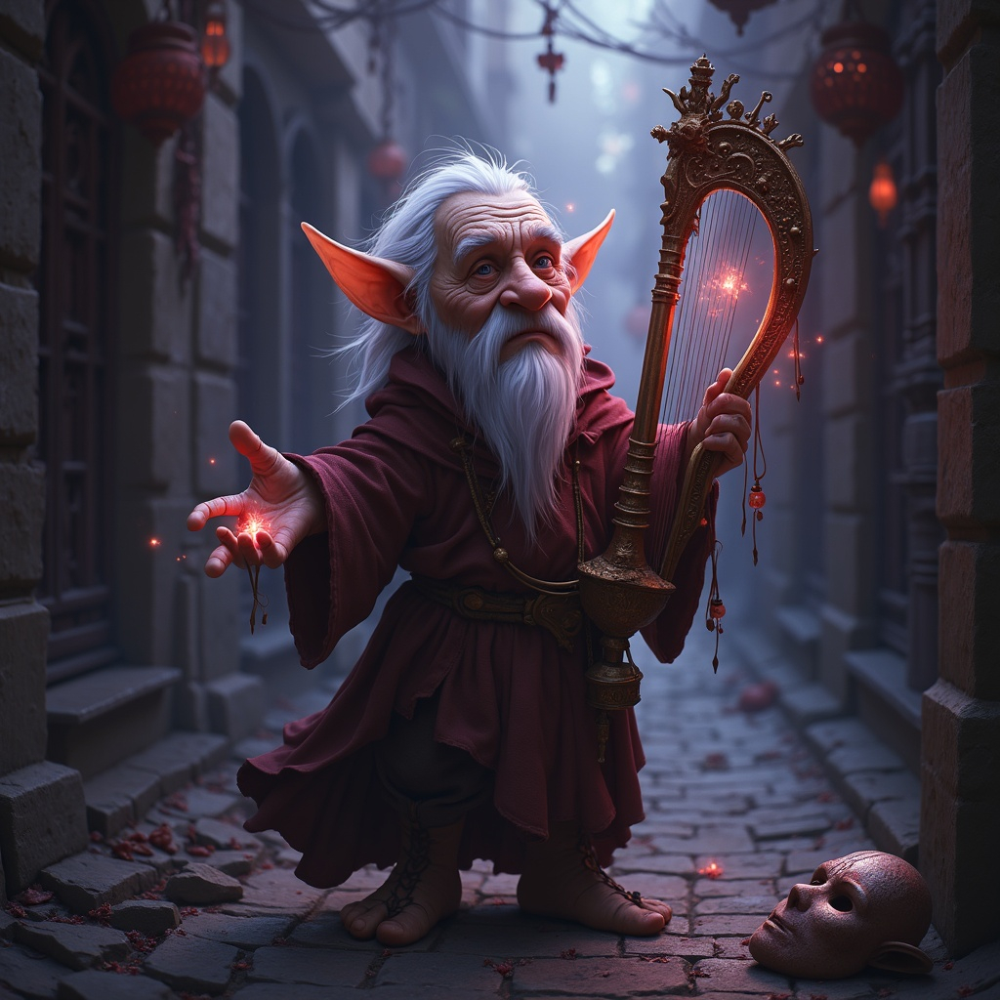

Born in the shadowed alleys of Varn Hollow under a blood moon, Herukan, a gnome with hauntingly large eyes and
nimble fingers, was sold to the Carnival of the Shrieking Bell by his parents who could not afford to raise him.
Amid cruelty and fractured instruments, he learned to
channel sorrow through his harp-like voice. One night, after a brutal beating, his lament awake a Shard of
Uzume, an
ancient fragment of song-power buried in nearby for thousands of years. The shard fused with his soul, and in
his next performance, time itself stopped. Herukan, through no choice of his own,
ascended and became god of song and emotional transformation — one who sings and the world obeys.